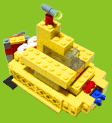
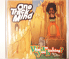
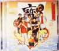

| 10/5 レゴブロックのススメ | ||
| ←これは自分が去年くらいに作った作品。潜水艦です。 レゴはいいよ。いつやっても飽きないし、なにより想像力をかき立ててくれます。造形力、創造力が身に付きます。お子さんと一緒にどうぞ。 作品を見に来たい人はうちに遊びに来てくれ！ |
| 9/30 ついに！！ | ||
| やった！クラムボン！出ますよ！アルバムが！11月19日「imagination」！もちろんタワレコに予約しにいくぞ！クラムボンの郁子さんのやってるラジオ番組「胡麻みそズイ」で知った。i-Radioっていうネットラジオです。便利だよ。好きな時に聞けるしバックナンバーもある、流された曲も一目でわかる！みなさん、聴いてますか？オススメです。 |
| 9/26 ガダルカナル。 | ||
いいっすね。殺陣早いしかっこいい。音楽もタップのノリをうまく表現してておもしろいし。でも台詞が現代ぽくって雰囲気壊してたなぁ…新しいって思えば新しいけどね。総合的にはやっぱさすが監督賞って感じでした。おすぎは5000円だってさ！ |
| 9/25 なれそめ。 | ||
| そもそもなんでスカが好きになったかって言うと高１にOne Track Mindのアルバムを買ったから。視聴して気に入って即衝動買いだった。原点は高１だったねー。その頃にクラムボンも出会ったし。そんなアルバムの名は「What are you bitching?」 |
| 9/24 BBBB。 | ||
| 最近ブラス系のスカが好きになった。そこで出会ったアルバム「ハッピーラッシュ」BLACK BOTTOM BRASS
BANDの十周年を記念したフルアルバムだそう。これがあったおかげで夏らしい夏が過ごせました。ありがとう。 |
| 9/23 日記はじめます。 | ||
| 日記を友達のススメではじめます。 更新サボってなんか寂しいサイトになってるしちょうどいい機械かもしれないし。 とりあえず今日はご挨拶まで。 |